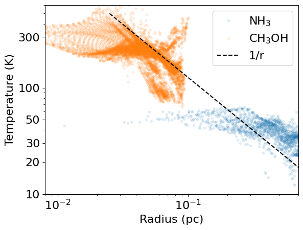
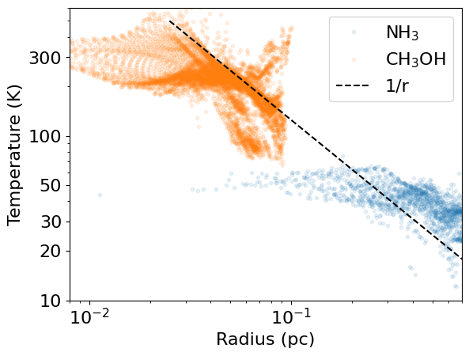
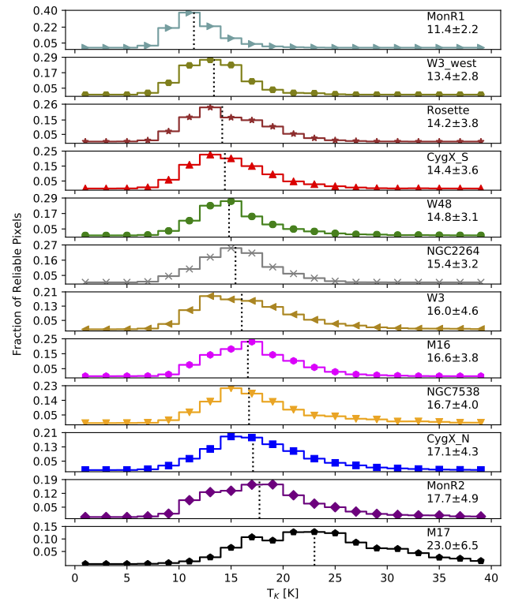
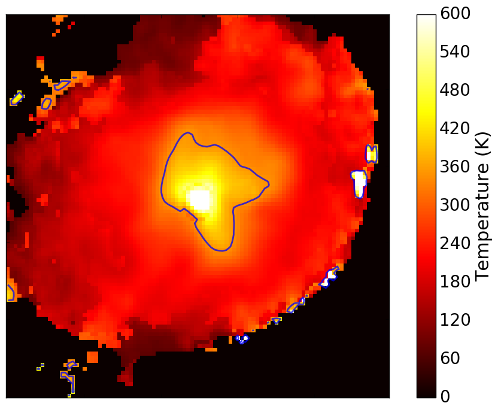
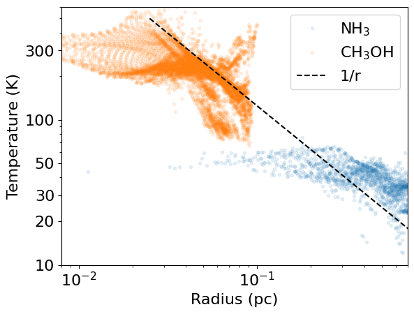

Surveys of the dense Galactic ISM with ALMA, VLA, GBT, and SMA
Highlights & Outlook
With students:
Desmond Jeff (UF PhD), Theo Richardson (UF PhD), Connor
McClellan (NRAO REU 2018, now UVA), Josh Machado (NRAO REU
2019, now Ohio State), Danielle Bovie (UF REU 2020), Madeline Hall
(UF undergrad), and many collaborators
Slides available at
https://keflavich.github.io/talks/aas236_observations_of_the_ISM.html
. Use arrow keys to navigate.
https://keflavich.github.io/talks/aas236_observations_of_the_ISM.html
. Use arrow keys to navigate.
Good and bad observables
In the ISM:
- Mass is not observable
- Age is not observable
- Line-of-sight velocity is generally observable
- Gas temperature is sometimes kinda observable
Theorists: Don't compare theoretical mass & age to reported, instead model observables
Observers: We need to emphasize systematic errors appropriately
ALMA, VLA, GBT, SMA observations of Galactic HMSFRs
A few key surveys are ongoing or done:
- ALMA-IMF: first data release this year
- ALMA-IMF analogues & affiliates
- NH3 followup (VLA 19B-172, 20A-090)
- CMZ imaging surveys
- CMZoom: Data paper, catalog paper submitted
- MUSTANG-2 Galactic Plane Survey pilot
- GAS: Greenbank Ammonia Survey (local clouds)
- KEYSTONE: Greenbank NH3 survey of bigger clouds
Kinematics
ALMA & VLA surveys will provide detailed kinematics of the dense gas:
N2H+, HC3N,
NH3 etc.
Henshaw+2020: Velocity 'wiggles' pervade the ISM on all scales.
Henshaw+2020: Velocity 'wiggles' pervade the ISM on all scales.

SCOUSE and other tools will make these measurements more common.
Kinematics: New tools, new measurements
Semi-automated
- Henshaw+ 2019: SCOUSE, jdhenshaw/scousepy
Automated - heuristic-based
- Riener+ 2019: GaussPy+, mriener/gausspyplus
- Chen+ 2020: MUFASA, mcyc/mufasa
- Marchal+ 2019: ROHSA, antoinemarchal/ROHSA
Automated – convolutional neural network
- Keown+ 2019: CLOVER, jakeown/astroclover
Automated – Bayesian Monte Carlo
- Sokolov+ 2020: pyspecnest, vlas-sokolov/pyspecnest
- Svoboda+ in prep: NestFit, autocorr/nestfit
Slide credit: Brian Svoboda


 


Kinematics and Temperature
HMSFRs are warmer, broader-lined than local clouds
GAS KEYSTONE VLA
Friesen & Pineda+ 2017 (left); Keown+ 2019 (middle); Machado+ in prep, W51 (right)
Kinematics and Temperature
Narrow-linewidth local cloud analogs exist within HMSFR clouds.
Machado+ in prep, W51
Kinematics and Temperature
HMSFRs are warmer, broader-lined than local clouds

|
Svoboda+ in prep, Mon R2 (left); Machado+ in prep, W51 (right)
Kinematics and Temperature
HMSFRs are warmer, broader-lined than local clouds

|
|
Svoboda+ in prep, Mon R2 (left); Machado+ in prep, W51 (right)
Kinematics and Temperature
HMSFRs are warmer, broader-lined than local clouds


GAS KEYSTONE VLA
Friesen & Pineda+ 2017 (left); Keown+ 2019 (middle); Machado+ in prep, W51 (right)
ALMA-IMF has many dense thermometers
Temperature traces feedback in the densest gas and sets fragmentation scales

UF graduate student Desmond Jeff is extending this project
Feedback affects large volumes of dense gas
ALMA + VLA + GBT together give multiple temperature probes on multiple scales.
High-mass protoclusters are filled with gas warmed by feedback.

Ginsburg+ 2017, Machado+ in prep
Connecting the ISM to SF outcomes
Sgr B2:
Ginsburg+ 2018a
"The Brick":
Henshaw+ 2019a
UF PhD student Theo Richardson is improving protostellar modeling using the Robitaille+ 2017 models
A threshold separates Sgr B2 from The Brick
A threshold separates Sgr B2 from The Brick
CMZoom: Star-forming clouds are more concentrated
Battersby+ submitted
ALMA, VLA, GBT, SMA observations of Galactic HMSFRs
- ALMA-IMF: first data release this year
- ALMA-IMF analogues & affiliates
- NH3 followup (VLA 19B-172, 20A-090)
- CMZ imaging surveys
- CMZoom: Data paper, catalog paper submitted
- MUSTANG-2 Galactic Plane Survey pilot
- GAS: Greenbank Ammonia Survey (local clouds)
- KEYSTONE: Greenbank NH3 survey of bigger clouds
ALMA-IMF: N2H+, others
N2H+ structures are clumpy, wispy, and filamentary.
Louvet+ in prep will provide a sample of hundreds of continuum cores
Hatchfield+ in prep
Ginsburg+ 2020 gives first results
CMZoom: SMA 1mm survey
Battersby+ submittedHatchfield+ in prep
The MUSTANG Galactic Plane Survey (MGPS90)
90 GHz, 9" Galactic Plane Survey;Ginsburg+ 2020 gives first results
Summary
- Gas temperature & LOS velocity can be accurately measured, mass can be inaccurately (but still usefully) measured
- Feedback affects large volumes of dense gas, not just single cores
- ALMA, VLA, GBT, SMA surveys are delivering parsec-scale, 1000-AU resolution maps of velocity, temperature, kinda density, and star formation
- Cloud comparison studies allow tests of physical models, and they are becoming possible
Slides available at https://keflavich.github.io/talks/aas236_observations_of_the_ISM.html.
Take mass measurements with a grain of salt
- Star masses are measurable via disk Keplerian curves.
- Orion's Source I has a central 15 M⊙ star.